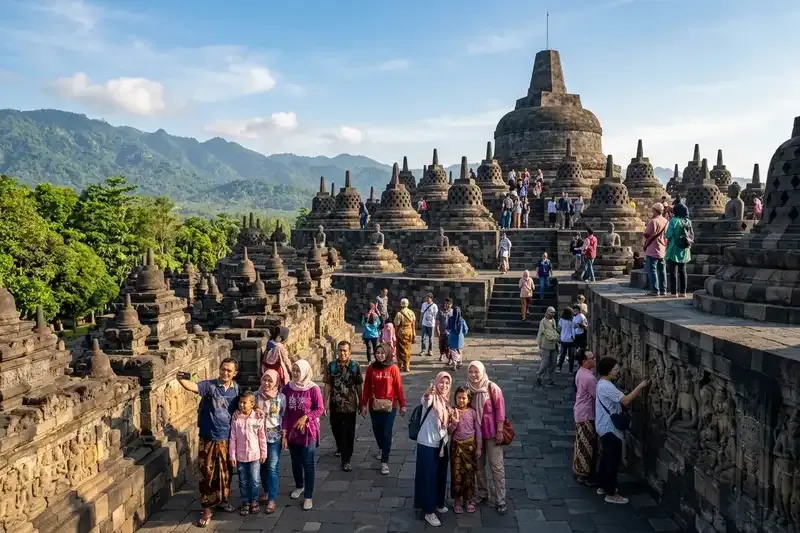

Kota di Jawa Timur berjumlah sembilan, yaitu Surabaya, Malang, Batu, Kediri, Blitar, Madiun, Mojokerto, Pasuruan, dan Probolinggo, masing-masing dengan wisata unggulan berbeda.
Ringkasan Inti
- Jawa Timur memiliki 9 kota dan 29 kabupaten (BPS Provinsi Jawa Timur, periode 2024).
- Kota Surabaya berpenduduk sekitar 2,88 juta jiwa dan Kota Malang sekitar 844 ribu jiwa (BPS, Sensus Penduduk 2020).
- Wisata unggulan tiap kota mencakup sejarah, religi, alam, dan kuliner, tanpa bergantung pada taman hiburan.
- Beberapa destinasi terkenal, seperti Trowulan, Candi Penataran, dan Bromo, berada di kabupaten yang mengelilingi kota.
1. Apa Saja Kota di Jawa Timur dan Berapa Skalanya?
Jawa Timur memiliki sembilan kota di antara 38 kabupaten dan kota, dan Surabaya menjadi kota terbesar dengan sekitar 2,88 juta jiwa pada 2020.
Data Sensus Penduduk 2020 BPS mencatat Kota Surabaya sekitar 2,88 juta jiwa dan Kota Malang sekitar 844 ribu jiwa. Kota lain seperti Kediri, Blitar, Madiun, Mojokerto, Pasuruan, Probolinggo, dan Batu berukuran lebih kecil, sehingga suasananya lebih tenang dan mudah dijelajahi dalam satu atau dua hari.
Ukuran kota memengaruhi gaya perjalanan. Kota besar cocok untuk wisata perkotaan, sedangkan kota kecil sering menjadi titik singgah menuju destinasi di kabupaten sekitarnya.
2. Apa Wisata Unggulan Kota Surabaya?
Wisata unggulan Kota Surabaya meliputi Tugu Pahlawan, Monumen Kapal Selam, House of Sampoerna, Masjid Sunan Ampel, dan ekowisata mangrove Wonorejo.
Tugu Pahlawan dan Museum Sepuluh Nopember menyajikan sejarah pertempuran Surabaya. Monumen Kapal Selam memungkinkan pengunjung masuk ke kapal selam yang dijadikan museum. House of Sampoerna menampilkan museum dan bangunan kolonial yang terawat. Kawasan Masjid Sunan Ampel menjadi pusat wisata religi, dan hutan mangrove Wonorejo menawarkan wisata alam di tengah kota. Surabaya juga kuat pada kuliner, seperti rawon dan lontong balap.
3. Apa Wisata Unggulan Kota Malang?
Wisata unggulan Kota Malang meliputi Kayutangan Heritage, Alun-Alun Tugu, Kampung Warna-Warni Jodipan, Museum Brawijaya, dan kawasan Ijen Boulevard dengan arsitektur kolonial.
Kayutangan Heritage menonjolkan bangunan lama, kafe, dan suasana jalan yang nyaman untuk berjalan kaki. Alun-Alun Tugu dan kawasan Ijen Boulevard memperlihatkan tata kota peninggalan masa kolonial. Kampung Warna-Warni Jodipan menjadi contoh kampung yang ditata sebagai daya tarik visual. Museum Brawijaya menyimpan koleksi sejarah militer. Malang juga terkenal dengan baksonya.

4. Apa Wisata Unggulan Kota Batu?
Kota Batu unggul dalam wisata alam pegunungan, yaitu Coban Talun, Coban Rais, Paralayang Gunung Banyak, pemandian air panas Cangar, dan agrowisata apel.
Coban Talun dan Coban Rais menawarkan air terjun di kawasan hutan yang sejuk dan cocok untuk jalan kaki santai. Paralayang Gunung Banyak menyuguhkan pemandangan lembah dari ketinggian. Pemandian air panas Cangar berada di lereng pegunungan dan cocok untuk relaksasi. Agrowisata apel memungkinkan pengunjung mengenal budidaya buah khas Batu. Kota Batu berbatasan langsung dengan Kota Malang, sehingga keduanya sering dikunjungi dalam satu perjalanan.
5. Apa Wisata Unggulan Kota Kediri?
Wisata unggulan Kota Kediri meliputi Goa Selomangleng, Museum Airlangga, Klenteng Tjoe Hwie Kiong, dan kuliner khas seperti tahu takwa serta getuk pisang.
Goa Selomangleng berada di lereng bukit dan berkaitan dengan cerita sejarah Kediri. Museum Airlangga memuat koleksi peninggalan sejarah dan budaya setempat. Klenteng Tjoe Hwie Kiong menjadi salah satu tempat ibadah tua di kota ini. Di sekitar Kediri, Simpang Lima Gumul dan Gunung Kelud berada di kabupaten dan dapat dijadikan tambahan rute.
6. Apa Wisata Unggulan Kota Blitar?
Kota Blitar dikenal sebagai kota Proklamator karena memiliki Makam Bung Karno, Perpustakaan Proklamator, dan Istana Gebang, dengan Candi Penataran di kabupaten sekitarnya.
Kompleks Makam Bung Karno menarik peziarah dan wisatawan sejarah dari berbagai daerah. Perpustakaan Proklamator menyimpan dokumentasi terkait Presiden pertama Indonesia. Istana Gebang merupakan rumah yang berkaitan dengan masa kecil Bung Karno. Candi Penataran di Kabupaten Blitar adalah kompleks candi besar yang layak ditambahkan ke rute perjalanan.
7. Bagaimana Wisata Kota Madiun?
Wisata Kota Madiun berfokus pada kuliner pecel dan brem, alun-alun kota, serta bangunan kolonial, dengan Monumen Kresek dan Telaga Sarangan di sekitarnya.
Madiun cocok untuk wisatawan yang ingin merasakan kuliner khas dan suasana kota yang tidak terlalu ramai. Pecel Madiun dan brem menjadi oleh-oleh yang populer. Monumen Kresek berada di Kabupaten Madiun dan terkait dengan sejarah peristiwa 1948, sedangkan Telaga Sarangan berada di Kabupaten Magetan di lereng Gunung Lawu.
8. Bagaimana Wisata Kota Mojokerto?
Kota Mojokerto menjadi pintu gerbang menuju situs Majapahit di Trowulan, termasuk Candi Bajang Ratu, Candi Tikus, Kolam Segaran, dan Museum Trowulan.
Situs Trowulan berada di Kabupaten Mojokerto, tidak jauh dari pusat kota. Wisatawan sejarah dapat menghabiskan setengah hingga satu hari untuk menjelajahi candi, gapura, kolam, dan museum. Kawasan pegunungan Pacet dan Trawas di kabupaten yang sama menawarkan udara sejuk sebagai pelengkap.
9. Bagaimana Wisata Kota Pasuruan?
Wisata Kota Pasuruan bercorak religi dan sejarah, seperti Makam KH Abdul Hamid dan Masjid Agung Al-Anwar, serta menjadi jalur menuju Bromo lewat Tosari.
Makam KH Abdul Hamid ramai dikunjungi peziarah, terutama pada waktu-waktu tertentu dalam kalender keagamaan. Masjid Agung Al-Anwar menjadi salah satu ikon kota. Kabupaten Pasuruan menyimpan destinasi seperti Kebun Raya Purwodadi dan akses ke kawasan Bromo dari sisi Tosari.
10. Bagaimana Wisata Kota Probolinggo?
Kota Probolinggo dikenal sebagai kota mangga dan anggur serta menjadi salah satu pintu masuk menuju Gunung Bromo dan Air Terjun Madakaripura di kabupatennya.
Julukan Bayuangga merujuk pada bayu, anggur, dan mangga, komoditas yang lekat dengan daerah ini. Wisata kota relatif santai, sedangkan daya tarik utama berada di Kabupaten Probolinggo, yaitu Cemoro Lawang sebagai gerbang Bromo dan Madakaripura sebagai air terjun tinggi di tebing melengkung. Wisatawan sering menginap di Probolinggo sebelum berangkat ke Bromo pada dini hari.
11. Bagaimana Memilih Kota di Jawa Timur Sesuai Gaya Wisata?
Pilih Kota Surabaya untuk sejarah dan kuliner, Malang dan Batu untuk udara sejuk dan alam, Blitar dan Mojokerto untuk sejarah, serta Probolinggo untuk akses Bromo.
Wisatawan keluarga dapat memilih Malang dan Batu untuk kombinasi alam ringan, museum, dan kuliner. Peziarah dapat merencanakan Surabaya, Pasuruan, dan Blitar. Pencinta petualangan cenderung memakai Probolinggo atau Malang sebagai basis menuju Bromo. Untuk gambaran menyeluruh lima wilayah wisata, baca objek wisata Jawa Timur dan petanya.